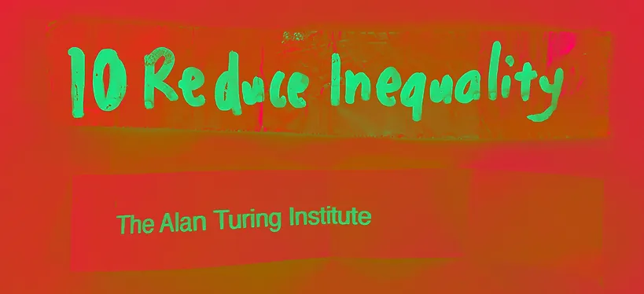
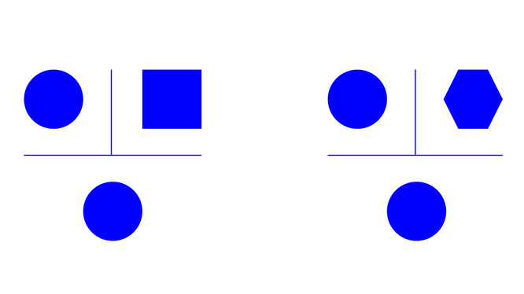

Create an interactive, system-bending range of objects and interventions, that transport the audience into other world views of themselves. As a starting point, you will be given one area from the UN Sustainability Goals (zero hunger, zero poverty, etc) to develop the final outcome. Your outcome will not necessarily be solution driven but instead embrace the design method of ‘changing the question’ as a challenge to reimagine ourselves, behaviours and world views.
* workshop to practice about engaging with different goals in a better way.
The Turing test; developed by Alan Turing in 1950, is a test of a machine’s ability to exhibit intelligent behaviour equivalent to, or indistinguishable from, that of a human.

human / computer
human
human / nature
human
The idea of the turing test adapted to exhibit the
similarities between nature and humankind.
Inequality between humankind and nature.
The relationship between humankind and nature comprises many
different strands, and the pace with
which the date has advanced suggests that some bonds may be broken
beyond repair.
Something to think about;
The Earth is 4.6 billion years old.
Let’s scale that to 46 years.
We have been here for 4 hours.
Our industrial revolution began 1 minute ago.
In that time,
we have destroyed more than 50% of the world’sforests.
This is not sustainable.

Paul J. Crutzen
Dutch chemist
Nobel Prize-winning, atmospheric chemist. He is known for work on climate change research and for popularizing the term ‘‘Anthropocene’’.
Anthropocene
noun :
1. The current geological age, viewed as the period during which
human activity has been the dominant influence on climate and
the environment.

James Ephraim Lovelock
Independent scientist
An independent scientist, environmentalist, and futurist. He is
best known for proposing ‘‘the Gaia hypothesis’’.
The Gaia hypothesis ;
Also known as the Gaia theory or the Gaia principle, proposes that living organisms interact with their inorganic surroundings on Earth to form a synergistic and self-regulating, complex system that helps to maintain and perpetuate the conditions for life on the planet.
Mycorrhizal networks.
The fine, hairlike root tips of trees join together with microscopic
fungal filaments to form the basic links of the network, which appears
to operate as a symbiotic relationship between trees and fungi, or
perhaps an economic exchange. As a kind of fee for services, the fungi
consume about 30 percent of the sugar that trees photosynthesize from
sunlight. The sugar is what fuels the fungi, as they scavenge the soil
for nitrogen, phosphorus and other mineral nutrients, which are then
absorbed and consumed by the trees.
To communicate through the network, trees send chemical, hormonal and
slow-pulsing electrical signals, which scientists are just beginning
to
decipher.
Trees can detect scents through their leaves, which, for Peter
Wohlleben, qualifies as a sense of smell. They also have a sense of
taste. When elms and pines come under attack by leaf-eating
caterpillars, for example, they detect the caterpillar saliva, and
release pheromones that attract parasitic wasps. The wasps lay their
eggs inside the caterpillars, and the wasp larvae eat the caterpillars
from the inside out.
“Very unpleasant for the caterpillars,” says Wohlleben. “Very clever
of the trees.”
“When a human breaks the branch with his hands, the tree knows the
difference, and brings in substances to heal the wound.”
“ When a deer is biting a branch, the tree brings defending
chemicals to make the leaves taste bad.”
wood, wide, web
Trees are far more alert, social, sophisticated - and even intelligent - than we thought.
Forest trees have evolved to live in cooperative,
interdependent
relationships,
maintained by communication and a collective intelligence similar
to an insect
colony.
“All the trees here, and in every forest that is not too damaged,
are connected to each other through underground fungal networks.
Trees share water and nutrients through the networks, and also use
them to communicate. They send distress signals about drought and
disease, for example, or insect attacks, and other trees alter their
behavior when they receive these messages.”
- Peter Wohlleben
‘’ A lot of cities still think of trees as just ornamentation. But
they really do so much more than that. And the evidence suggests
that we should start thinking of trees as a crucial part of our
public-health infrastructure.”
- Rob McDonald
Suzanne Simard
Simard helped identify something called a hub tree, or “mother tree”. Mother trees are the largest trees in forests that act as central hubs for vast below-ground mycorrhizal networks. A mother tree supports seedlings by infecting them with fungi and supplying them the nutrients they need to grow.
Mother trees are the biggest, oldest trees in the forest with the most fungal connections. They’re not necessarily female, but Simard sees them in a nurturing, supportive, maternal role. With their deep roots, they draw up water and make it available to shallow-rooted seedlings. They help neighboring trees by sending them nutrients, and when the neighbors are struggling, mother trees detect their distress signals and increase the flow of nutrients accordingly.
the idea of creating a workshop for people to understand that ; we are nothing less than a tree
This workshop is all about creating or understanding your relationship with nature. There is no certain conclusion. It is about your inferences
There are some tools that we’re going to use during the workshop.
The first one is the video. It will take you to a meditative state with its’ sound and visuals. The second one is tens and ems machine, which will be the metaphor for the mycorrhizal network. The last one is the head massage tool for you to relax more.
At the end of the workshop, there will be a questionnaire to get feedback from your experience to develop the workshop in the future.
workshop contents ;
- - leaflet (contains key ideas of the workshop)
- - sticker (to spread out the idea of the workshop)
- - questionnaire
- - videography
- - tens/ems machine
- - head massage tool